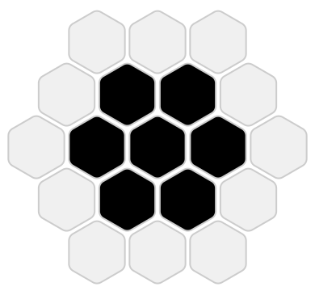
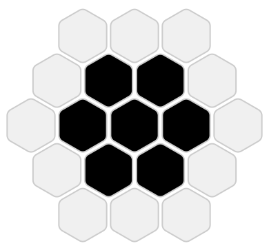

Hexagonal Wireworld
Cellular Automata
Cellular automata are models comprised of a grid of cells, a finite set of states that each cell can be in, a neighborhood of cells whose states affect a given cell, and a set of rules which define how cells transition from one state to another.
The most famous cellular automaton is likely John Conway's Game of Life. In this particular model, cells are in one of two states: Alive or Dead, and transition between these states based on the number of neighboring alive cells. Specifically, the Game of Life dictates that:
- Dead cells become alive if they have exactly three live neighbors
- Alive cells stay alive if they have two or three live neighbors
Here "neighbors" are defined by the Moore neighborhood, meaning the 4 adjacent cells and the 4 diagonally adjacent cells.
These simple rules give rise to some marvelously complex behaviors if given the right starting cell states, and a seemingly natural chaos when randomly initialized.
There are many other cellular automata using different states, rules, definitions of neighbors, or even numbers of dimensions. It is a rabbit hole well worth exploring.
Wireworld
Wireworld, a cellular automaton first proposed by Brian Silverman, is relatively constrained compared to the Game of Life. Rather than allow every cell to transition freely, simulations are constrained to pre-initialized paths (conductors) and the rest of the cells are set to an empty state which can only transition to itself.
More precisely, Wireworld uses four different cell states with their own transition rules:
- Empty cells always stay Empty
- Electron Heads transition to Electron Tails
- Electron Tails transition to Conductors
- Conductors transition to Electron Heads if one or two neighboring (Moore neighborhood) cells are electron heads
In effect, this means that a long sequence of connected Conductor cells acts as a wire and pairs of Electron Heads and Electron Tails move along these wires. However, the constraint that three or more Electron Heads stop the propagation of the "electron" creates opportunities to design interesting circuits.
While the above examples show some of the core features of this ruleset, David Moore and Mark Owen took these building blocks and implemented a computer entirely in Wireworld. I love projects that take a simple system and, through abstraction and clever design, push its limits.
Hexagonal Grids
Wireworld is tremendously cool, and hexagons are tremendously cool, so what if we built Wireworld not on a square grid, but on a hexagonally tiled grid1?
My hope at the outset was that the unique neighboring and the 6-fold symmetry (as opposed to the 4-fold of a square grid) would provide an opportunity for interesting rulesets and designs. I did wind up with what I think is an interesting result, but I quickly became disillusioned that the hexagonal grid by itself provides much value.
For example, hexagonal grids have six immediate neighbors as opposed to a square grid's four, potentially allowing for wires to be created with more natural patterns with fewer restrictions.

This is true to an extent, but misleading. A square grid does have 4 immediate neighbors, but by the rules for Wireworld, each of its eight neighbors present a valid direction for a wire. We haven't gone up from 4 neighbors, but down from 8 directions.


To bring back the possibilities of the hexagonal format, I decided to mirror the original's use of diagonal neighbors by including cells not immediately adjacent in determining cell transitions. First, we can look at some or all of the cells in the ring around the six immediate neighbors. Second, we can split the neighbors into multiple groups whose state counts are measured separately. I tried a number of rulesets and neighbor configurations, including the ones depicted here.
 

There are loads of combinations that could produce different results, so if I were to come back to this project later I maintain some optimism that other neighbor definitions and rulesets might result in worthwhile alternatives to explore.
Hexagonal Wireworld
I ended up using a ruleset with 18 neighbors, split into two tiers: the 6 inner neighbors, and the 12 outer neighbors.
I also added an intermediate cell state between Electron Head and Electron Tail, as we need two spaces away to prevent an electron from interacting with the wire behind it. Here are the rules I ended up with:
- Empty cells always stay Empty
- Electron Heads transition to Electron Middles
- Electron Middles transition to Electron Tails
- Electron Tails transition to Conductors
- Conductors transition to Electron Heads if either
- 1 inner-neighbor cell is an electron head and 0 or 1 outer-neighbor cells are electron heads
- 0 inner-neighbor cells are electron heads and exactly 2 outer-neighbor cells are electron heads
This ruleset is a bit more convoluted than the original Wireworld, but provides what we need for interesting circuits:
- Electrons can move along wires and split at junctions
- Two electrons colliding on a simple wire cancel out (as in the original Wireworld)
- Two electrons can join or cancel out based on gate structure
It also has a cool visual effect reminiscent of inductance, where currents can affect each other and jump between conductors.
Building Circuits
With the addition of electrons affecting cells two away, we have to be cautious with our intuition when laying out circuits. Two wires with a single gap in between is isolated only if we are dealing with one electron at a time, but as multiple electrons get involved we have to be cautious with spacing.
I was able to build some standard circuit components like diodes and logic gates, as well as a few other neat structures. The main weakness that isn't adequately shown here is each structure's fragility regarding timing (the XOR and AND gates work well, but the OR gate can only process signals at a slower rate).
Below are a bunch of different interesting structures I found playing with this ruleset. I'd encourage you to try out modifying some of the circuits; your intuition will likely be correct for a lot of cases, but it's easy to occasionally forget the effects of the wider neighbor range.
Reflection
Overall, the hexagonal grid didn't add much flexibility to Wireworld, and has relatively fragile structures with regard to signals needing to be in phase or processed at a certain rate. That combined with the larger structures due to the necessity of the Electron Middle state, means it's difficult to find much that the hexagonal version can do that the original cannot.
Regardless, it was fun to build and makes some cool animations!
-
I feel obligated to share, if you're ever doing anything with hexagonal grids, do yourself a favor and bookmark Amit's guide to hexagonal grids. It is a fantastic overview for dealing with coordinates, drawing, and everything else you might run into. ↩